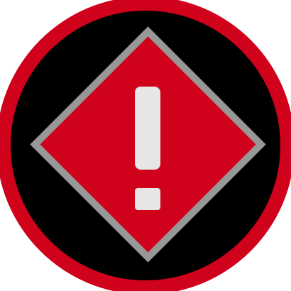

|
{{device.device_label}}
|
||||
|---|---|---|---|---|
| Device Name | Model | Role | ||
| {{endpoint.label}} | {{ctrl.endpointTypeStr(endpoint.type, endpoint.revision)}} | {{ctrl.getRoleLabel(endpoint.role)}} |
|
|
There are no HelixNet endpoints to display.
|
{{device.device_label}} ({{ ctrl.getAgentICUserCount(device) }}/{{ ctrl.getTotalLicensedUsers(ctrl.licenseService.AGENT_IC_LICENSE_REGEXP, device) }})
|
|||
|---|---|---|---|
| Role | Account | Device | |
|
{{ctrl.getLQRoleLabel(endpoint.role)}}
|
{{endpoint.label}} | {{ctrl.getEndpointPhoneType(endpoint)}} |
|
There are no Agent-IC connected users.
| VOX | Call | Action |
{{device.device_label}} ({{ ctrl.getUserSipLines(device) }}/{{ ctrl.getTotalLicensedUsers(ctrl.licenseService.SIP_LICENSE_REGEXP, device) }})
|
|||||
|---|---|---|---|---|---|---|---|---|
| ID | SIP Server | Account | ||||||
| {{sipLine.desc}} | {{sipLine.serverName}} | {{sipLine.label}} |
|


|
|
|||
|
{{sipCall.liveStatus.callerId}}
{{sipCall.uri}}
|
{{ctrl.codecToDisplayText(sipCall.liveStatus.codec)}}
|
|
||||||
There are no SIP Accounts configured.
|
{{device.device_label}}
|
|||||||
|---|---|---|---|---|---|---|---|
| ID | IVC Host | Port Label | VOX | Status | |||
| {{ivc.desc}} | {{ivc.serverName}} | {{ivc.label}} |
|
|

|
|
|
There are no IVC Accounts configured.
|
{{antenna.liveStatus.syncState}}
{{$index+1}}
|
||||||||
|---|---|---|---|---|---|---|---|---|
|
|
|
|||||||
|
Role
Beltpack Name
|
Key Legend
Talk-Only
Listen-Only
Talk & Listen
|
Actions
Call
RMK
|
{{antenna.label}}
|
Total
|
||||
ID |
Status |
Key |
Gain |
RMK |
Call |
{{ctrl.getNumberOfConnectedBPs($index)}}
|
{{ctrl.getTotalNumberOfBPs()}} |
|
| {{ctrl.getEndpointIdString(endpoint.id)}} |
{{ctrl.getRoleLabelById(endpoint)}}
 {{endpoint.label}}
Select role ...
|
T
C
{{endpoint.liveStatus.longevity.hours || 0}}h
{{endpoint.liveStatus.batteryType}}
|
|
|
|
|||
ID |
|
|---|---|
| {{ctrl.getEndpointIdString(endpoint.id)}} |
{{ctrl.getRoleLabelById(endpoint)}}
{{endpoint.label}}
|
-
This image includes an overall description of the device characteristics and some information and status indicators.
- On the top right, see the device ID (LM = Link-Master, Link-Members 2 - 6)
- On the bottom right, the following icons can be seen:
- Navigate to the device configuration page
- Alerts/Info indicator will appear when an error condition needs the user's attention. Click/touch for details.
- When the device is unreachable, the gear icon is changed into a trash icon to allow a device to be deleted from the link-group.
-
The device label as configured in the device configuration page
-
The right side of the device representation incudes information such as:
- Device type
- IP address
- Device's current capabilities (ports)
-
The left side of the device representation incudes information such as:
- Resource usage bar
-
- Device is working correctly
-
Device shows an error condition
The bell icon may appear below to provide more information
-
 Device is either not reachable or is disconnected
The bell icon appears below to provide more information. Also the gear icon may change into a delete icon to allow devices that are not present anymore to be deleted from the screen.
-
These icons represent the status of the PSU (or Power over Ethernet (POE) when available)
LQ 1Ru rack units have two power supplies. Use either one, or both for redundancy. Green = power connected. Red = power not connected.
-
This section displays information related to the SIP accounts configured in the system
-
The auto-assigned identifier for the SIP account
-
The user-defined description for the SIP server the account is registered against
-
The user-defined label for the SIP account
-->
-
Click status icon for information
-
Shows which device the SIP line is connected to. The green numbers show how many licenses are available on this device and how many licenses are in use.
-
SIP Caller Id of the incoming caller or outgoing destination
-
SIP Call URI of the incoming caller or outgoing destination
-
This light is green when incoming audio present on the call
-
Call/Codec
-
This section displays information related to the IVC accounts configured in the system
-
The auto-assigned identifier for the IVC account
-
The user-defined description for the IVC server the account is registered against
-
The user-defined label for the IVC account
-
Click here for port configuration options
-
This lights when valid incoming audio is detected
-
Click on status icon for information
-
This shows which device this connection is assigned to. If you have a Link-Group set up you see more than one device here
-
This section displays information related to the HelixNet Endpoints in the system
-
The user-friendly name given to the HelixNet device
-
The type of endpoint
-
A Role is a predefined setup for your HelixNet device. Change the Role in the Roles page if required
-
Click cog for port configuration options
-
This shows the device or devices in a Link-Group, and which Main Station beltpacks and remote stations are connected to
-
This section displays information related to the FreeSpeak II beltpacks in the system.
- Click to broadcast a message to all wireless beltpacks with either the 'Text to send' message or the word 'System' if left blank.
- The message to send, either as a broadcast message using the All Call button or the individual call button.
- Click to send an Remote Mic Kill (RMK) to all wireless beltpacks.
- Click to send the Remote Mic Kill (RMK) to an individual wireless beltpack.
- Click to send a message to an individual wireless beltpack with either the 'Text to send' message or the word 'System' if left blank.
- Choose to either display and filter beltpacks by their user friendly Role name or their beltpack name.
- A text-based filter for the beltpack list. This will either filter on Role names or beltpack names depending on the option selected above.
- Either the user friendly Role name or beltpack name of the current wireless beltpack.
- Transceiver port ID.
- The user friendly name given to this transceiver.
- The total number of beltpacks currently connected to this transceiver. It will turn yellow when the maximum number of beltpacks are connected. For 2.4GHz beltpacks this is 4, for 1.9GHz this is 5.
- Indicator that this beltpack is currently connected to this transceiver.
- The amount of battery life left in the beltpack.
- The signal quality between the beltpack and the transceiver. The letters FER will appear in red if there are communication errors.
- A real-time representation of the beltpacks potential and actual activation states.
- A real-time representation of the levels currently set on the beltpack.
- The user friendly name of the input.
- A list of the sources and destinations that will be created when the input is activated.
- The current status of the input.
- Click On or Off to activate that state. A gold background is active. A blue background is inactive.
- The user friendly name of the output.
- A list of triggers. One or more trigger will activate the output when the conditions are satisfied. The triggering element will be displayed in green text. Control Events configured to activate GPOs are not displayed in this list.
- The current status of the output.
- Click On or Off to activate that state. A gold background is active. A blue background is inactive.
-
This section displays information related to the Agent-IC Accounts in the system
-
A Role is a predefined setup for your Agent-IC client. Change the Role in the Roles page if required
-
The user-friendly name given to the Agent-IC user account
-
The operating system information of the currently connected Agent-IC account
-
Shows which device the Agent-IC client is connected to. The green numbers show how many licenses are available on this device and how many licenses are in use.
Routes |
|||||
|---|---|---|---|---|---|
Index |
GPI Label |
Source |
Destination |
Status |
Force |
| {{gpi.id + 1}} |
{{gpi.label}}

|
{{ ctrl.getEntityNameFromEntityRes(event.source) }}
{{ ctrl.getEntityNameFromEntityRes(event.destination) }}
No events assigned
|
|
||
Triggers |
|||||
|---|---|---|---|---|---|
Index |
GPO Label |
Key Target |
On Behavior |
Status |
Force |
| {{gpo.id + 1}} |
{{gpo.label}}
|
{{ ctrl.getEntityNameFromEntityRes(event.res) }}
{{ ctrl.getGPOActionDisplayTextFromValue(event.action) }}
No triggers assigned
|
|
||